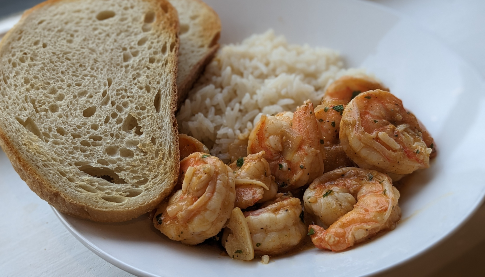
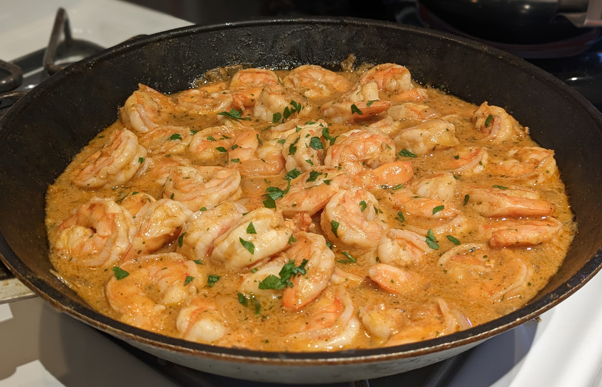

Shrimp Mozambique

Author: America's Test Kitchen |
Cooked: March 11, 2023
Yields: 4 Servings | Prep Time: 15 Minutes | Cook Time: 15 Minutes
Ingredients
- 2 Tbs Frank's RedHot hot sauce
- 2 Tbs olive oil
- 1 Tbs chopped fresh parsley
- 2 tsp paprika
- 2 chopped garlic cloves
- 1/2 tsp black pepper
- ~1/4 slice torn up white bread (excluding any hard crust)
- 2 Tbs water --------------------------
- 2 lbs extra-large shrimp (preferably untreated shrimp without any added salt or sodium tripolyphosphate)
- 1/2 tsp salt (only use if the shrimp were untreated)
- 1/4 tsp black pepper
- 1 Tbs olive oil
- 1/2 medium white onion, diced
- 1/2 tsp salt
- 3 garlic cloves, thinly sliced
- 1 c. dry white wine (Pinot Grigio or Sauvignon Blanc)
- 2 Tbs unsalted butter
Piri Piri Sauce
Shrimp Mozambique
Directions
- Place all items into a blender and blend for ~2 minutes until everything is smooth. Add more water if necessary. --------------------------
Piri Piri Sauce
- Peel shrimp and remove the tails. If shrimp were frozen and are a bit wet, pat them dry with paper towels.
- Season shrimp in a bowl with salt and pepper.
- Heat the oil in a nonstick skillet over medium heat. Add the onion and 1/2 tsp salt and cook for ~5 minutes or until soft.
- Add sliced garlic and cook for about 1 minute.
- Add white wine, bring to a boil, and cook until the wine has reduced by half (about 4 minutes).
- Add shrimp and cook until just opaque (about 4 minutes).
- Add in the Piri Piri sauce and butter, and continue to heat until the butter melts.
- Remove from heat and top with more chopped parsley.
Shrimp Mozambique

Additional Notes
- Served with coconut rice and toasted sourdough bread.
- Cindy suggested trying them with grits. I think even serving with a risotto could be really good.